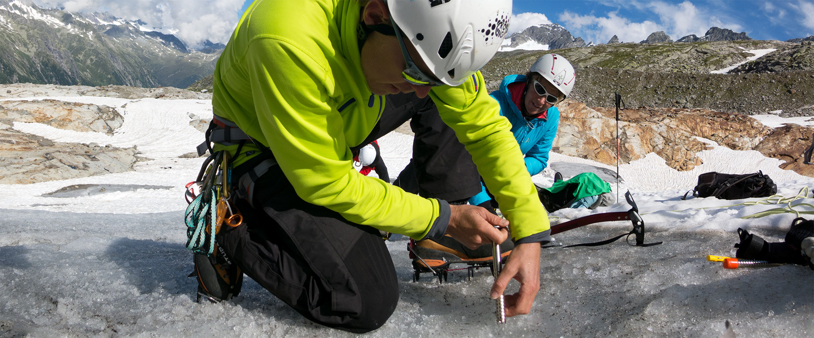
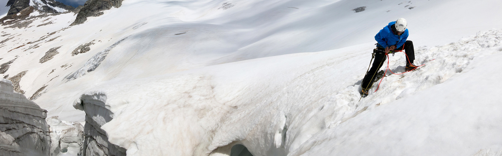
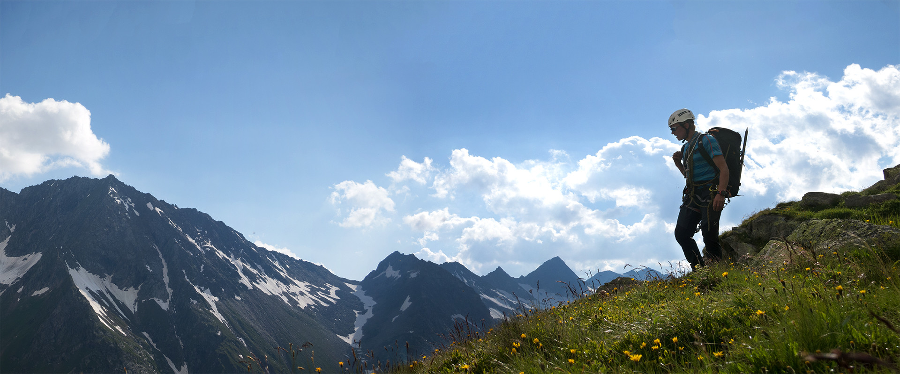
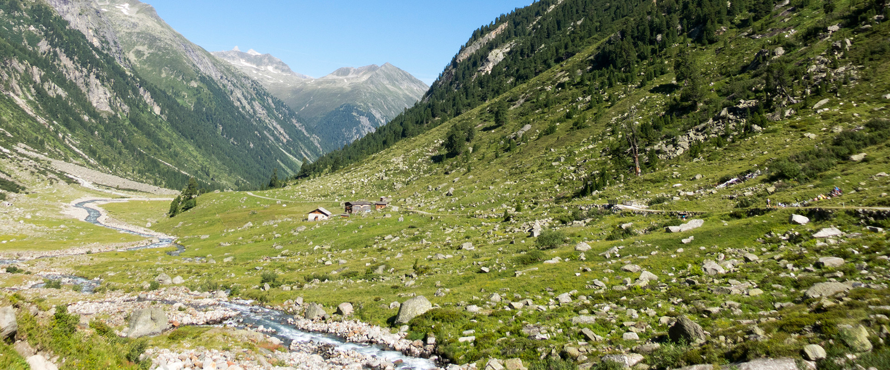
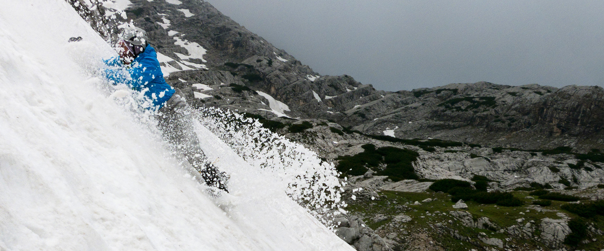

Tag 1
Tag 2
Tag 3
Tag 4
TAG 1 | Zustieg - Materialtransport - Einführung und Übung
Treffpunkt ist am Morgen der Parkplatz hinter der Kirche in Krimml. Materialverladung und Transfer mit dem Hüttentaxi.
Zustieg ab Materialseilbahn bzw. Innere Keesalm Richtung Warnsdorfer Hütte (500 Hm ca. 1,5-2 h). Lager- bzw. Zimmerbezug, kurze Rast sowie Programmbesprechung der Tage.
Im nahegelegenen Klettergarten werden die ersten Seiltechnikübungen durchgemacht (Abseilen, Knotenkunde, Anseilmethoden, Gletscherseilschaft, Fixpunkte im Fels).
Abends Orientierung, Gletscher- und Wetterkunde.
TAG 2 | Übungstag
Heute steht die Technik und Taktik beim Begehen von Gletschern sowie die Spaltenbergung (Selbst- und Kameradenrettung) am Programm.
Hintersichert versuchst du, den Sturz deiner Kollegin / deines Kollegen in die Gletscherspalte zu „halten“ sowie diese/n aus der Spalte mit Hilfe der Losen Rolle (eine spezielle Rettungstechnik) zu bergen.
Die eigene Rettung aus der Spalte mittels Prusik und Münchhausen wirst du ebenfalls üben.
Abends Wiederholung der Tagesinhalte, Seil- und Sicherungstheorie.



TAG 3 | Übungstag
Heute suchen wir uns einen Ort mit blanken Eisflächen, wo wir das Gehen mit Steigeisen und Pickel sowie das Erstellen von Fixpunkten in Eis und Firn üben werden.

Wenn noch Zeit bleibt, versuchen wir uns an einem Eisaufschwung im Eisklettern.
Die Orientierung im Gelände sowie eine Wiederholung der Inhalte der letzten drei Tage ist allgegenwärtiger Inhalt dieses Tages.
Abends selbständige Tourenplanung für den morgigen Tourentag.

TAG 4 | Tourentag - Abstieg - Heimreise
Durchführung der selbst von dir geplanten Tour mit Unterstützung von uns.
Gemeinsamer Abstieg und Hüttentaxitransfer.
Zurück am Parkplatz um ca. 17 Uhr.

